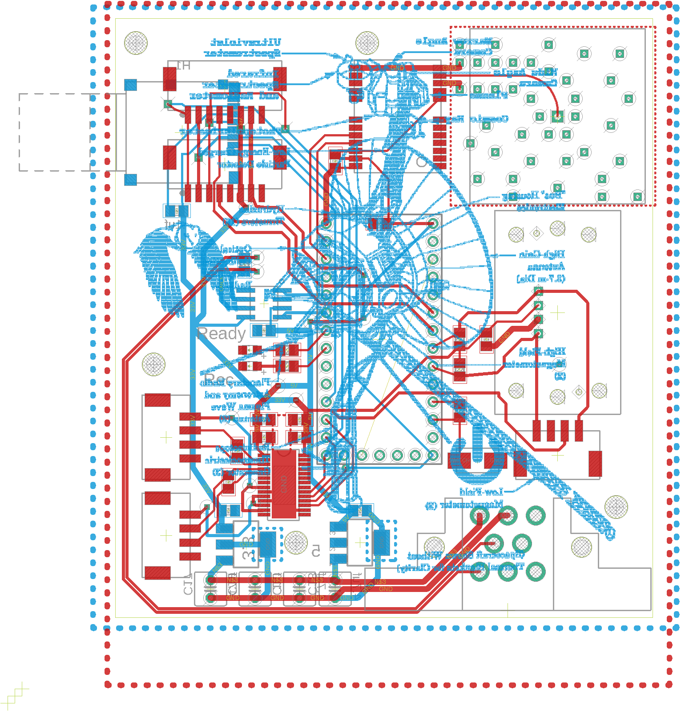

AeroDAQ

This board features GPS, Pitot tube measurement, an IMU, and strain gauge measurement to provide data feedback for an aerodynamic test setup.
Data Aquisition
This board features GPS, Pitot tube measurement, an IMU, and strain gauge measurement to provide data feedback for an aerodynamic test setup.
This board agressively filters the Battery current signal to remove any noise, making sure our state of charge calculations are accurate.
This cooling board interfaces with the control system over CAN to provide 2 temperature readings, a flow meter, and cooling pump control with warning light. This board measures under 1 square inch
This small board was designed to sit on the load cell for accurate strain gauge measurement